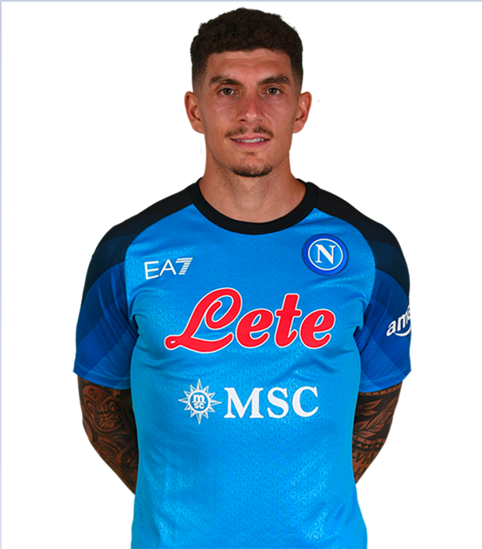

Personal Information
Name: Giovanni Di Lorenzo
Birthdate: March 4, 1993
Nationality: Italian
Height: 184 cm (6 feet, 1 inches)
Position: Right-Back | #22
About The Player
Giovanni Di Lorenzo is an Italian professional footballer who plays primarily as a right-back or center-back for the Italian Serie A club Napoli and the Italy national team. Born on March 4, 1993, in Naples, Di Lorenzo began his professional career at the age of 22 with the Italian club Matera. He later played for other Italian clubs such as Empoli and S.S.C. Napoli, where he joined in 2019. Di Lorenzo quickly established himself as a key player for Napoli with his solid defensive skills and ability to contribute offensively. He is known for his versatility, playing in multiple positions on the pitch, and his strong work ethic. Di Lorenzo has represented the Italy national team since 2019, playing a vital role in their successful qualification for the 2022 World Cup. At 28 years old, Di Lorenzo has a promising future ahead of him and is considered one of the most exciting young defenders in Italian football.
| Statistics in All Competetions | |
|---|---|
| Appearances | 37 |
| Minutes Played | 3309 |
| Goals Scored | 4 |
| Assists | 6 |
| Tackles | 63 |
| Yellow Cards | 2 |
| Red Cards | 0 |